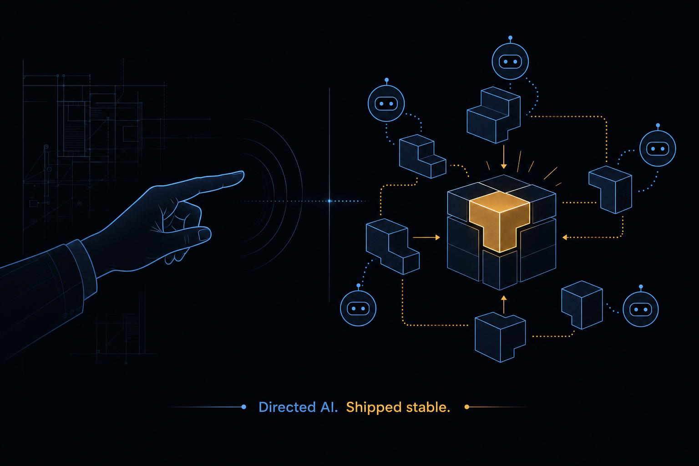
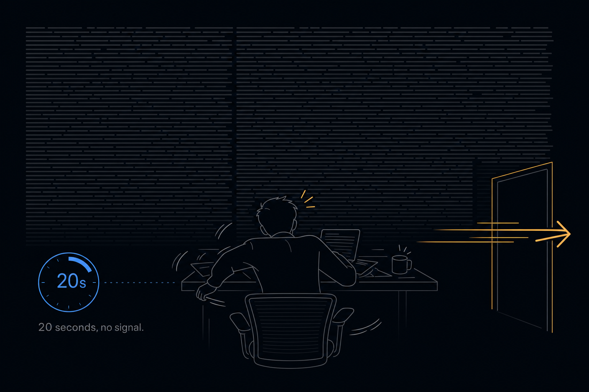
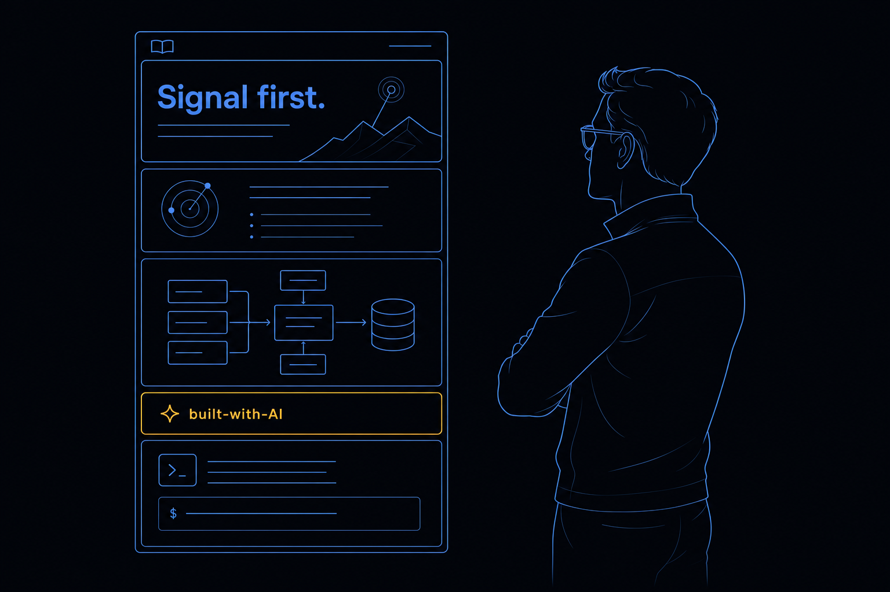
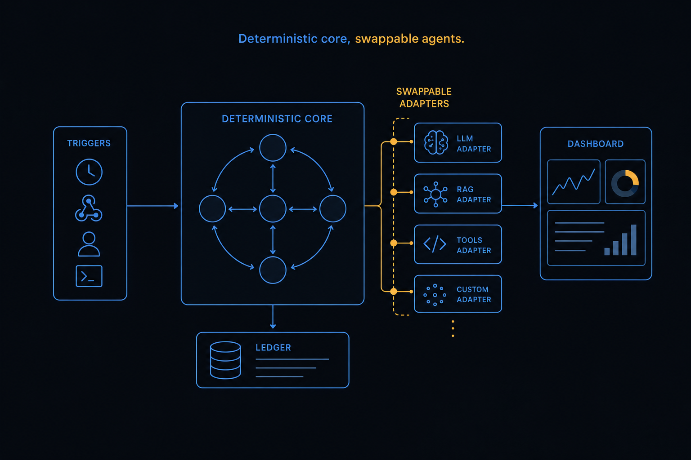
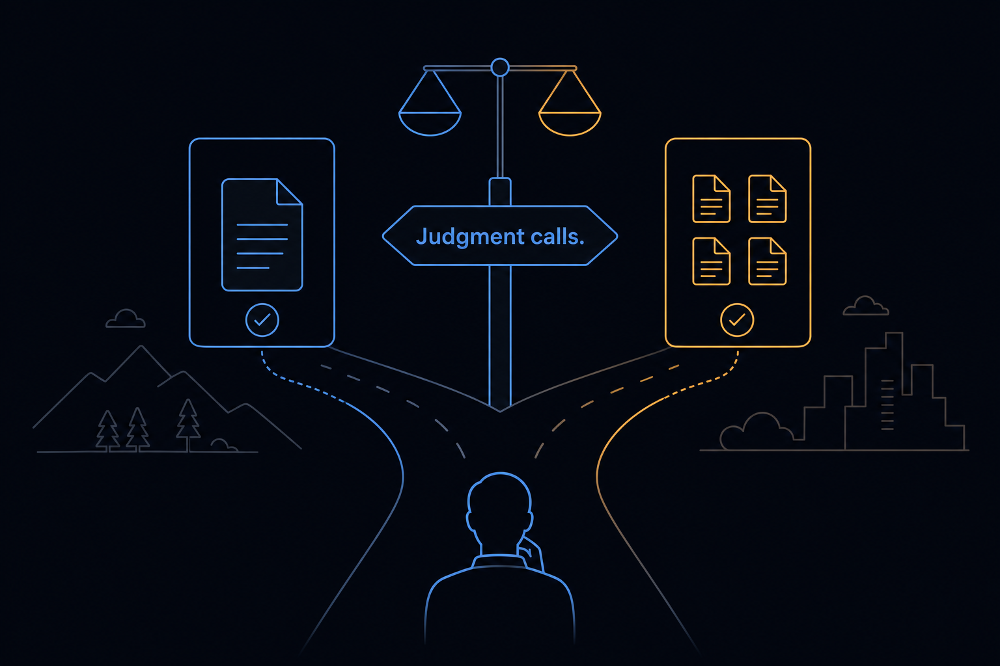
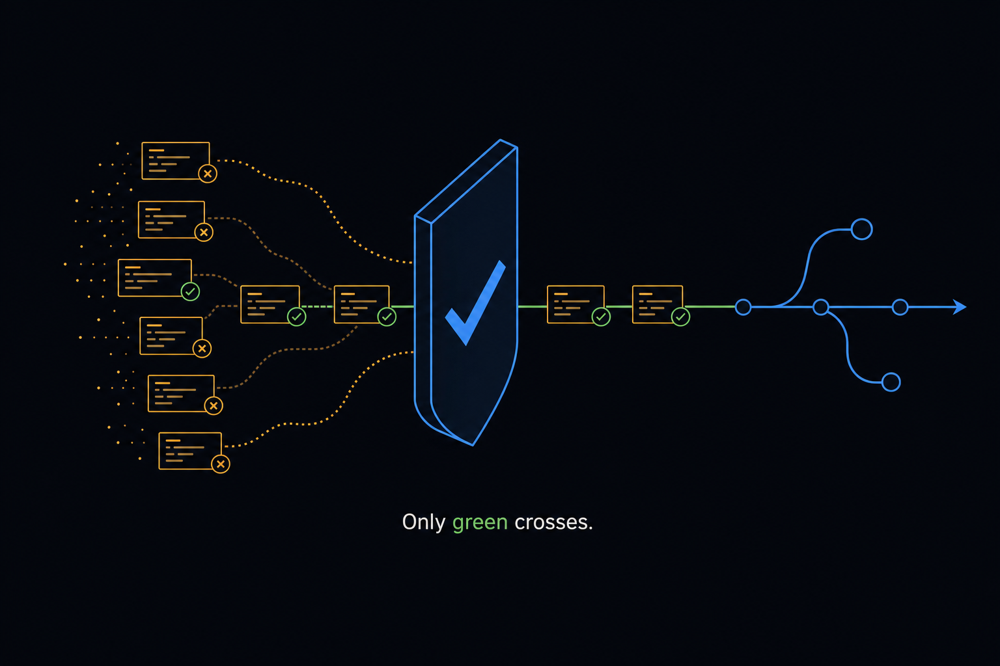

Plan: Showcase README — the Portfolio Front Door
Rewrite README.md into a hiring-grade showcase that leads with engineering substance, proves stability with hard numbers, and is candid that this was built human-directs-AI with Claude Code — framing that mastery as a strength, because the project itself industrializes exactly that workflow.

Purpose
Turn the repository's front page into a portfolio piece for hiring managers and senior engineers. The current README.md is an excellent operator's manual — but it answers "how do I run this," not "what does this say about the person who built it." This plan rewrites it to answer the second question first, while keeping the operational depth a scroll away. The defining choice: be openly candid about the AI-assisted build process and present it as evidence of a modern, high-leverage engineering practice — not a disclaimer to bury.
Numbers are pulled live from the repo at commit 32df805 and must be re-verified at write time (Phase 4) — never ship a stat the codebase can't back.
Problem
Three gaps make today's README a weak portfolio artifact:
- It buries the lede. It opens with what the system is (correct, but dense) and never frames why building it is hard or what skill it demonstrates — OTP supervision design, a typed boundary discipline, a zero-orphan OS-process ledger, durable workflow resumption. A hiring manager skims 20 seconds and leaves without the signal.
- It's silent on process. The work was done human-directs-AI (Claude Code + a custom ADW harness, 87 spec documents driving the build). That is the single most current, differentiating thing about the engineer — and the README doesn't mention it. Silence reads either as hiding it or not noticing it; both are worse than owning it.
- No visual anchor. A wall of prose. Employers respond to one clean architecture diagram and a confident hero far more than to paragraph six.

Solution
Rewrite README.md as a two-audience document: a showcase top half that lands the signal in one screen, flowing into the existing operational depth for engineers who read on. Keep it a single file (it is what GitHub renders first) and preserve every accurate operational section. The new structure, top to bottom:
┌─ Hero ─────────────────────────────────────────────┐
│ Name · one-line value prop · status badges │
│ Hero image (architecture-at-a-glance) │
├─ What it is (3 sentences, plain) ──────────────────┤
├─ Why it's hard / what it demonstrates ─────────────┤ ← the skill signal
│ OTP supervision · typed boundaries · zero-orphan │
│ ledger · durable resume · harness-agnostic core │
├─ Architecture (one diagram + 6-line module map) ───┤ ← visual anchor
├─ Engineering discipline (the green gate, by #) ────┤ ← "stable codebase" proof
├─ How this was built — human + AI, candidly ────────┤ ← the differentiator
├─ Skills demonstrated (scannable matrix) ───────────┤
├─ Quickstart / run it ──────────────────────────────┤ ← existing content, trimmed
└─ Status, honest limitations, what's next ──────────┘The "How this was built" section is the centerpiece. Framing: "I directed AI coding agents to build a 31k-line, fully-typed, green-gated OTP platform — under a self-imposed quality bar the AI could not lower. The platform itself industrializes that exact human-directs-AI loop." That is honest, current, and rare. The stability proof (warnings-as-errors, Credo --strict, Dialyzer, 1,109 tests, all green) is what turns "used AI" from a risk into a credential.

Relevant Files
Existing Files (read & mine for truth)
- existing
README.md— the rewrite target; salvage and trim its accurate operational sections (Installation, Running, Routes, Triggering, Testing gate). - existing
BUILD_PROMPT.md— the authoritative architecture spec; source of truth for every technical claim (supervision tree, event contract, §10 extensibility, milestones M0–M7). - existing
docs/engineering-principles.md— the reflection on why typed + functional + gate-enforced development works; mine it for the "what this demonstrates" voice (transferable principles, not just rules). - existing
ai_docs/typed-elixir-standard.md+.credo.exs+mix.exs(dialyzer/warnings-as-errors) — the enforced discipline; the concrete green-gate evidence. - existing
adws/README.md+specs/*(87 plan artifacts) — the AI-assisted process made tangible: the ADW harness and the spec-driven build trail that back the candid section. - existing
ai_docs/agentic-layer-adaptor.md,ai_docs/plugin-authoring.md— recent, sophisticated subsystems worth a sentence each (Projects adaptor, the plugin system).
New Files
- new
specs/showcase-readme/*.png— the generated hero + architecture + process images (synced visual identity). - new
assets/readme/*(optional) — real screenshots of the running console/dashboard at/(the strongest possible proof it works); a follow-on the author captures. - new
README.operational.md(optional) — only if the team prefers to split the operator's manual out; default is to keep one file.
Implementation Phases
IMPORTANT: Execute every phase and task step by step, in order, top to bottom.
Status markers: [] idle · [wip] in progress · [x] complete · [f] failed. All start as [].
[] Phase 1: Audience & narrative architecture
Decide who the README sells to and the exact order signal lands. Lock the messaging spine before writing a word of prose so every section earns its place in the first screen.
1. Define the spine
[]Pick the primary audience: senior/staff backend & platform engineers and the hiring managers who screen for them (Elixir/OTP, distributed systems, AI-engineering). Write to them.[]Draft the one-line value prop (≤ 20 words) and 3 sub-claims it must prove: (a) hard systems design, (b) enforced stability, (c) modern AI-leveraged delivery.[]Order sections so the skill signal appears above the fold (hero → what → why-it's-hard), pushing run instructions below.[]List the exact claims to make and, for each, the file/command that proves it (the fact-check ledger used in Phase 4).
2. Testing Strategy
Validate the spine against a cold-read heuristic before investing in prose.
[]The "20-second test": a reader who reads only the hero + first section can state what it is, why it's hard, and that it's AI-built-but-stable. Self-review (or a peer) confirms.[]Every planned claim has a backing file/command in the ledger — no unbacked superlatives.
[] Phase 2: Write the showcase top half
Author the new front matter: hero, what-it-is, why-it's-hard / what-it-demonstrates, and a tight architecture section with a module map. Confident, specific, no fluff.
1. Hero + signal sections
[]Hero: project name, the one-liner, status badges (Elixir 1.20 · Phoenix 1.8 · OTP 28 · "green gate: passing" · license), and the hero image.[]"What it is" — 3 plain sentences a non-Elixir manager understands.[]"Why it's hard / what it demonstrates" — a scannable list tying each hard problem to the skill it proves: OTP supervision & crash isolation; a closed typed event contract across untrusted boundaries; a durable zero-orphan OS-process ledger; crash-resumable workflows; a harness-agnostic core (add a harness = one module).[]"Architecture" — one diagram (Phase 4 image) + a 6–8 line module map; link toBUILD_PROMPT.mdfor depth.
2. Skills matrix
[]A compact table: Capability → where it lives in the repo → what it demonstrates (e.g. "Concurrency & fault tolerance →session/server.ex, supervision tree → OTP design under real OS-process failure").
3. Testing Strategy
Accuracy and tone, before polish.
[]Every technical sentence checked againstBUILD_PROMPT.md/ source — no overclaim, no inflated scope.[]Tone read-through: confident, specific, not boastful; no marketing adjectives without a number or file behind them.
[] Phase 3: The candid "How this was built" section (the centerpiece)
Write the differentiator: an honest, confident account of the human-directs-AI process and the stability bar that made it trustworthy. This is what most portfolios won't have the maturity to write.
1. The narrative
[]State it plainly: built with Claude Code, directed by the author, using a spec-driven loop (87 plan artifacts inspecs/) and a custom ADW (AI Developer Workflow) harness inadws/.[]Frame the leverage as the skill: defining architecture & invariants, decomposing work into specs, reviewing/steering AI output, and enforcing a quality bar the AI cannot lower.[]Name the bar concretely — the green gate:mix compile --warnings-as-errors,mix format --check-formatted,mix credo --strict,mix test --warnings-as-errors(1,109 tests),mix dialyzer— all green, every change.[]Close the loop: note the meta — the platform itself industrializes this human-directs-AI orchestration, so the build process and the product are the same idea at two scales.[]Be candid about boundaries: what the author owned (design, invariants, review, debugging the hard OTP/race issues) vs. what AI accelerated (mechanical implementation, test scaffolding, docs). No false modesty, no overclaiming sole authorship.
2. Testing Strategy
The credibility test — would this read as honest and strong to a skeptical staff engineer?
[]Every process claim is verifiable from the repo (specs/,adws/, the gate config) — a reader can check it.[]The section reads as a strength, not an apology: no hedging language ("just", "only", "with AI's help I managed to").
[] Phase 4: Visuals + live fact-check
Generate the synced-identity images, drop in the architecture diagram, and re-verify every number/claim against the live repo. Images are the anchor; accuracy is the credibility.

1. Imagery
[]Generate the hero + architecture + process images (this plan's synced identity) and place them: hero at top, architecture in the Architecture section.[](Optional, strongest) Capture 1–2 real screenshots of the running console at/and the swimlane dashboard; store underassets/readme/and embed.[]Confirm GitHub renders every image path (relative paths, committed assets) — no broken images on the rendered page.
2. Fact-check ledger (re-run live)
[]Re-derive each stat at write time: test count, LOC, module/context counts, version pins, spec count. Update any that drifted from32df805.[]Run the full green gate and confirm it passes, so "all green" is true the moment it's claimed.
3. Testing Strategy
[]mix compile --warnings-as-errors && mix format --check-formatted && mix credo --strict && mix test --warnings-as-errors— proves the green-gate claim.[]Every README stat traced to a command/file in the ledger — zero unverifiable numbers.
[] Phase 5: Polish, render-check & ship
Final markdown hygiene, link integrity, mobile/GitHub render check, and a last cold read. Preserve the operational content so the file still works as the operator's manual.
1. Hygiene
[]Keep/trim the existing operational sections (Installation, Running, Routes, Triggering, Testing gate, Layout); link long references rather than inlining.[]Add a short "Status & honest limitations" section (e.g. live-CLI acceptance is manual; nothing deployed; single-author) — candor reads as confidence.[]Table of contents for the long file; consistent heading levels; working anchor + external links.
2. Testing Strategy
[]Render-check on GitHub (or a markdown previewer): images load, tables format, TOC anchors work, no raw HTML artifacts.[]Link check: every internal path and external URL resolves.[]Final 20-second cold read by a fresh reader (or the author after a break): signal lands, AI-candor reads as strength, no typos.
Validation Commands
Execute these to validate the README is showcase-ready and every claim holds:
[]mix compile --warnings-as-errors && mix format --check-formatted && mix credo --strict && mix test --warnings-as-errors— the green-gate claim is literally true.[]grep -nE '[0-9][0-9,]+' README.md— every number reviewed against a live source (tests, LOC, modules, versions).[]find . -path ./deps -prune -o -name '*.png' -print+ a render preview — all referenced images exist and load on GitHub.[]Markdown render check (GitHub preview orgrip/VS Code preview) — headings, tables, TOC, images all render.[]Cold-read sign-off: signal in 20s · AI-process candid & strong · no unbacked claim · no typo.
[f] and move on.Questionables

One README, or split the operator's manual out?
Default: one file. README.md is what GitHub renders and what a hiring manager opens — splitting risks the showcase and the manual both feeling thin. Lead with showcase, flow into operations, link the heavy references (BUILD_PROMPT.md, ai_docs/*). Revisit only if the single file exceeds comfortable length, in which case move deep ops to README.operational.md and keep the showcase + quickstart up top.
How candid about the AI-assisted build — full transparency or a light touch?
Recommendation: full, confident transparency. The project is an AI-orchestration platform; hiding the build method would be both incongruous and a missed differentiator. The honest, mature framing ("I directed AI under a quality bar it couldn't lower; here is the green gate that proves it") is rarer and more impressive than either silence or a buried footnote. The risk — a reviewer who discounts AI-assisted work — is better met head-on with evidence than avoided.
Whose voice — first person ("I built") or project-neutral?
Assumption: first person in the "How this was built" and skills sections, neutral elsewhere. A portfolio piece benefits from a named human owning the decisions; the technical/operational sections stay neutral so the file still serves as project docs. If the repo will be shared without attribution, fall back to neutral throughout.
AI-generated images vs. real app screenshots?
Both, in order of strength. Generate the synced-identity hero + architecture now (always available, on-brand). But a real screenshot of the live console/dashboard is the single most persuasive asset — "it actually runs" — so it's flagged as the recommended follow-on the author captures and commits under assets/readme/.
How much to claim as sole authorship?
Claim direction and ownership of decisions, not every keystroke. The defensible, honest position: the author owns the architecture, invariants, review, and the hard debugging; AI accelerated implementation under that direction. Overclaiming "I hand-wrote 31k lines" is both false and unnecessary — the demonstrated skill is the orchestration and the bar, which is the more valuable signal anyway.
Notes
Draft copy — the two sections that matter most
Lift-ready starting points (refine in Phase 2/3; verify numbers in Phase 4):
Hero one-liner (pick one)
repo_builder — a harness-agnostic platform for the deterministic
orchestration of non-deterministic AI coding agents. Elixir · Phoenix · OTP.
# alt, skill-forward:
A fault-tolerant OTP platform that drives swappable AI agent CLIs through
durable, crash-resumable workflows — built typed, tested, and gate-green."How this was built — human + AI" (draft)
## How this was built — candidly
I built this with **Claude Code**, directing the work rather than typing every
line. The method was deliberate and is itself part of what the project
demonstrates:
- **I owned the architecture and the invariants** — the supervision tree, the
canonical event contract, the zero-orphan ledger, the durable workflow split.
- **I decomposed the work into specs.** The `specs/` directory holds 87 plan
documents that drove the build, phase by phase.
- **I enforced a quality bar the AI could not lower.** Every change had to pass
the green gate before it landed:
mix compile --warnings-as-errors
mix format --check-formatted
mix credo --strict # @spec on every public function
mix test --warnings-as-errors # 1,109 tests
mix dialyzer
- **I reviewed, steered, and debugged.** The hard parts — OTP races, an
idle-timeout heuristic, a sandbox teardown race, Dialyzer's view of macro-built
types — were diagnosed and resolved by me, with AI as an accelerator.
The result is ~31k lines of strictly-typed Elixir with crash isolation, durable
state, and a green CI gate. The meta-point: **this platform industrializes the
exact human-directs-AI loop I used to build it** — deterministic orchestration of
non-deterministic agents, at two scales.Skills the README should surface (matrix seed)
| Capability | Where in the repo | What it demonstrates |
|---|---|---|
| Concurrency & fault tolerance | supervision tree, session/server.ex | OTP design; crash isolation under real OS-process failure |
| Type-driven design | ai_docs/typed-elixir-standard.md, Dialyzer, Credo | discipline; defects caught at the boundary, not in prod |
| Systems / OS integration | os_pid_ledger, orphan_reaper.ex, erlexec | zero-orphan guarantee across hard crashes |
| Durable workflows | workflow_engine/, Oban, workflow_runs | crash-resumable state machines; survives node restart |
| Extensible architecture | harness registry, plugin system | open-identity/closed-contract design (add a harness/plugin = one module) |
| Real-time UI | LiveView dashboard, streams, assign_async | flat-memory streaming observability |
| AI engineering | this whole repo + adws/ + specs/ | orchestrating AI agents to ship production-grade code |
Tone guardrails
- Every adjective earns a number or a file. "Robust" → "1,109 tests, zero-orphan ledger verified across hard-kill."
- No hedging in the AI section. Own it.
- Honest limitations stated plainly — single author, live-CLI acceptance is manual, not deployed. Candor > polish.
Rejected approaches
- Hide the AI involvement — rejected: incongruous for an AI-orchestration project and a missed differentiator.
- A separate marketing site / landing page — deferred: the GitHub README is where employers actually look first; nail that before anything fancier.
- Lead with installation — rejected: it's the operator's manual instinct; signal must come first.

Amendments
None yet — appended by the Update Plan / Update References workflows after first execution.